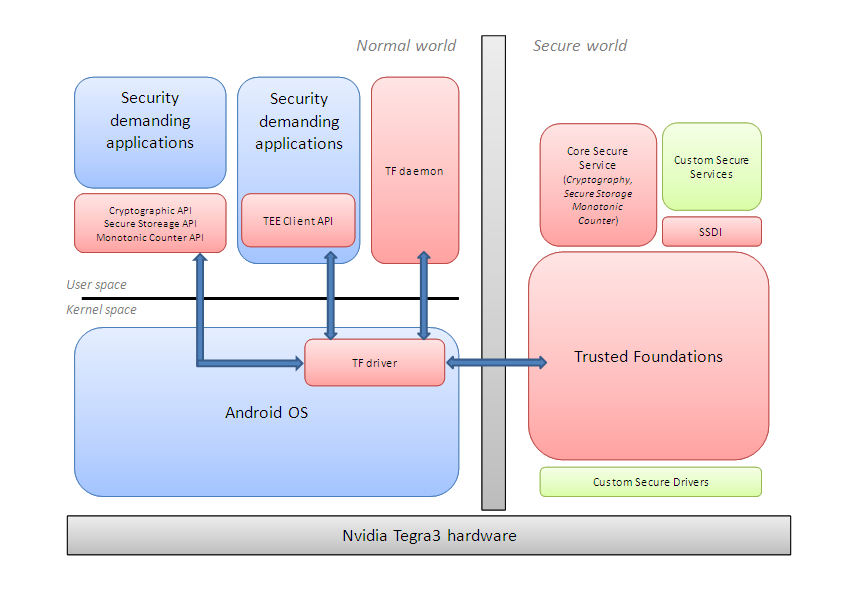

Trusted Foundations Tegra3 Android / Version AB01.16.37161 - Release
Overview
The Trusted Foundations provides a highly portable environment
for running security-sensitive code in a service-oriented fashion; client
applications executing in the Normal World make use of functionality provided by
security services executing in the Secure World.
These services are all exposed using the Trusted Foundations Client API (TF Client API), but this is hidden
underneath a more application programmer friendly API exposed by a stub library.
The Trusted Foundations includes a built-in Core Secure Service that provides standard security
functionalities, such as secure data storage, a cryptographic provider and a monotonic counter, but also
allows deployment of more complex custom services which could, for example,
implement the heart of a Digital Rights Management scheme.
This version of the Trusted Foundations is designed to run on Nvidia Tegra3 processors,
which is based on a Cortex-A9 processor.
This architecture provides isolation between Normal World and Secure World memory and
devices. Secure service code and data executing on top of the Trusted Foundations in the Secure
World is protected from malicious applications and rogue device drivers in the
Normal World OS.
The Trusted Foundations supports secure services developed via the TF SDK (Trusted Foundations Software Development Kit) and using the SSDI (Secure Service
Development Interface). These services developed using C and compiled to native machine code.
The following picture gives a high-level architecture overview of the Trusted Foundations with its different components:

Terminology
Through the documentation within this release, different terms may be used for the same entity. Hereafter are the equivalent of
some common terms that may be called differently.
- Trusted Foundations (TF) is the Trusted Logic product name.
- The Trusted Foundations Client API (TF Client API) is an implementation of the Global Platform' Trusted Eexecution Environment API (TEE API).
- The Normal World APIs are also called External APIs. They are the APIs implemented by the built-in secure service and that are directly accessible
by the client applications residing in the Normal World: Cryptography, Secure Storage and Monotonic Counter.
- The TF Cryptographic API, exposed in the Normal World (and qualified as "External API" in this case) and also in the SSDI (for the Secure Services) is also called PKCS#11 API and cryptoki.
- SST is the Secure Storage functionality of the Trusted Foundations.
- MTC is the Monotonic Counter functionality of the Trusted Foundations.
- The Core Secure Service or built-in service is the secure service that is part of the core Trusted Foundations.
It is used to expose the crypto, SST and MTC functionality in the Normal World.
- Secure Services can be developed in C (they are called just Secure Services or Native Services).
Content of this release
The structure of the Trusted Foundations can be defined as a number
of components targeted at different types of users who may be developing or
performing integration using the framework. These developers include platform
integrators, Secure World service developers, or developers of Normal World
client applications wishing to use security services running on the TF.
This release includes the following components:
Documentation
This release includes the following documentation:
- Developer Reference Manual

- This is the Developer Reference Manual that contains the specifications of all the APIs of the TF and that explains how
to use the examples and the simulators.
- Product Reference Manual
- The Product Reference Manual gives relevant informations to this specific product.
It details all the integration steps needed to have a TF running on an Android/Tegra3 platform.
It also contains all the Implementations note of the Tursted Foundations product provided in this package.
- Please also refer to Release Notes for
other specificites and known issues.
TF Tegra3 Android OS porting Kit
/os_porting_kit
This porting kit contains the sources, the binaries, the libraries and the driver that must be integrated to Android.
TF Tegra3 Secure World Integration Kit
/tegra3_secure_world_integration_kit
This integration kit provides the TF core binary to be executed in the secure world and tools for optionally post-linking custom secure services. The components in this
integration kit are independent of the OS running in the Normal World. It also contains the Secure Driver Development Kit (SDDK) that enables
the development of custom drivers for the Tegra3 target.
Trusted Foundations Software Development Kit
/tf_sdk
This software development kit contains the tools, libraries and header files for developing Secure Services or Normal-World components for the TF.
This kit also provides many examples in source code as well as TF simulator for Windows PC.
Unsupported Material
/unsupported/tegra3_ref_integration
This directory contains the complete binary of the reference Trusted Foundations.
/unsupported/python
/unsupported/openssl
These directories contain open source third party tools which are used for the reference implementation of the client authentication signature tool.
The python and openssl directories contain binary versions of these two tools for Win32 and Linux (ix86).